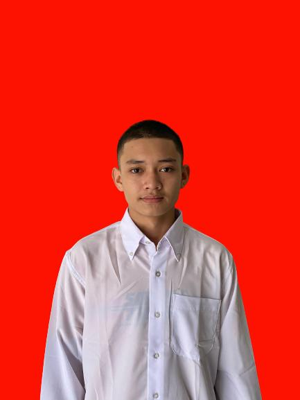

AI-Enthusiast Student at Institut Teknologi PLN 🤖🎓
 📥 Download My AI CV📞 +62 821 8139 7610
✉ alfathurrahman009@gmail.com
🌐 alfat.web
📍 Jalan Raya, Pondok Randu, Jakarta Barat
Saya adalah mahasiswa Institut Teknologi PLN yang bersemangat dan ingin terus berkembang. Lulusan SMA Negeri 1 Sungai Penuh jurusan IPS, saya percaya bahwa kedisiplinan, semangat belajar, dan kemampuan beradaptasi adalah kunci untuk sukses di era teknologi dan AI saat ini.